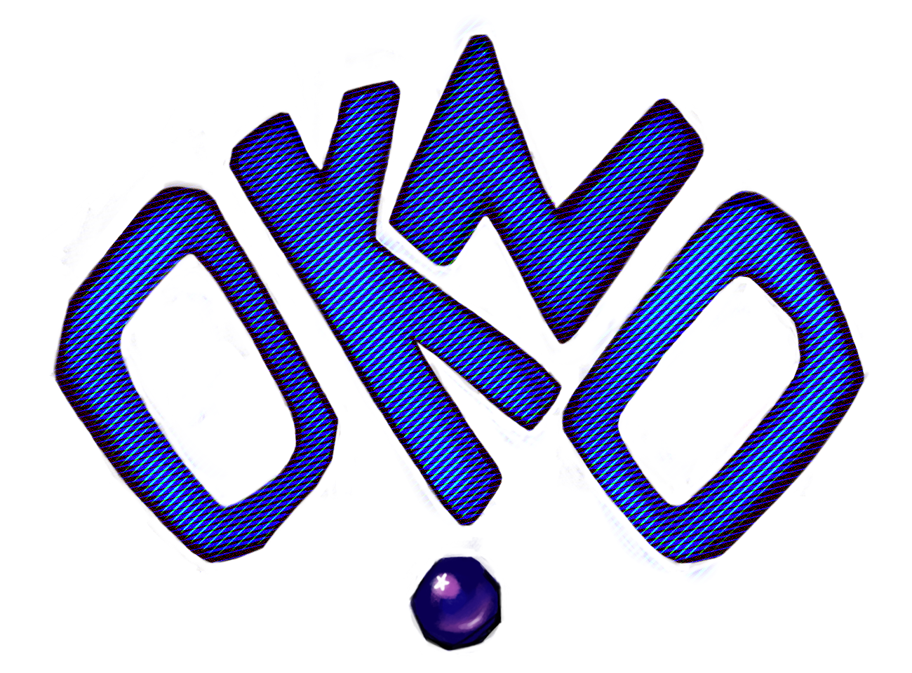

OKNO - это сообщество разработчиков и игроков,
во главе с oknogmdv - автором ютуб-канала OKNO, Telegram-канала и др.
Каждый участник сообщества участвует во все возможных активностях, а многие и сами производят контент.
Сейчас главной темой всего нашего контента является Deadays - динамичный ретро-зомби-шутер от первого лица.
ТЕКУЩИЕ ПРОЕКТЫ
DEADAYS
Deadays - это динамичный зомби-шутер в ретро-стилистике, в котором вам предстоит отбиваться от орд разнообразных зомби, улучшать свое оружие и персонажа, ставить новые рекорды и пробовать уникальные сочетания перков
Deadays - open-source проект, распространяющийся по лицензии М I Т. Кто-угодно может скачать файлы проекта и делать с ними все, что угодно. В связи с этим выходит множество модификации на игру, лучшие из которых мы добавляем в лаунчер игры на отдельную страницу.
*page by destructive_crab